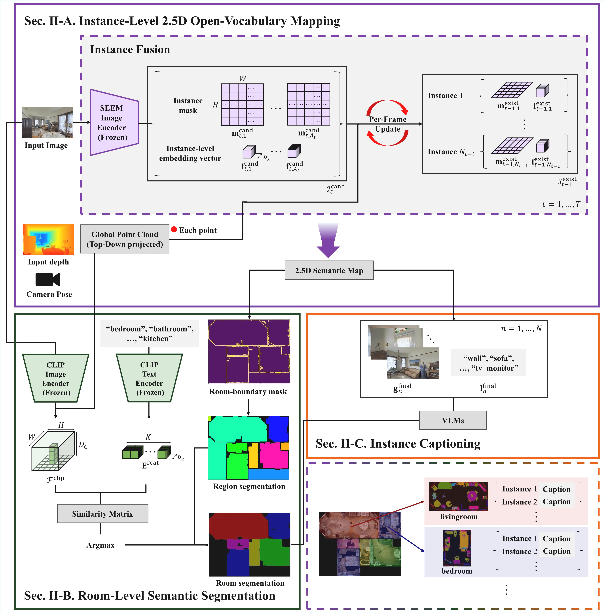
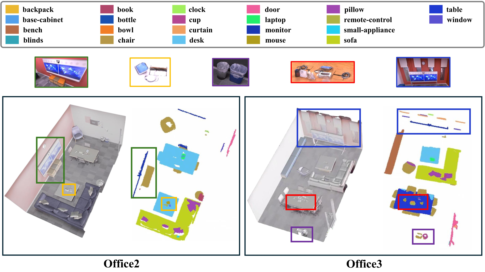
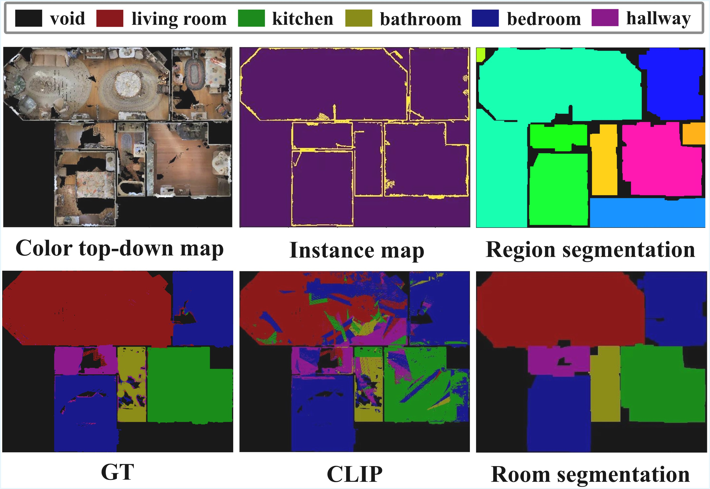
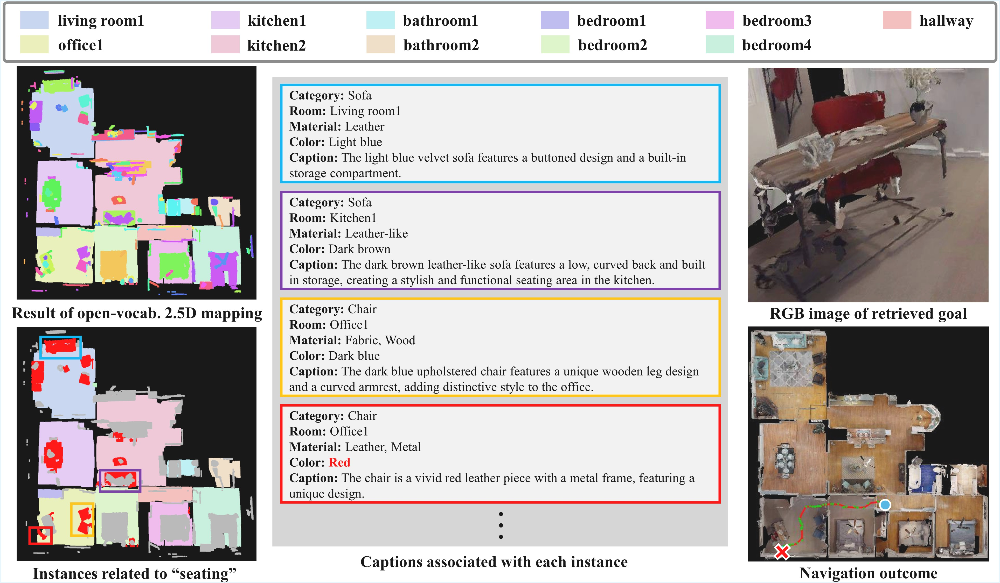

Abstract
Visual Language Navigation (VLN) aims to enable an embodied agent to navigate within complex environments by following natural language instructions. Achieving this goal requires agents to jointly perceive their surroundings and interpret human language.
Recent approaches build semantic spatial maps and leverage Large Language Models (LLMs) for reasoning and decision making. Despite these advances, existing VLN systems still suffer from a lack of instance-level object detail and limited robustness to diverse user queries, which hinders reliable navigation in complex indoor environments.
To address these limitations, we propose Instance-Enriched Semantic Maps, a unified framework with three key contributions:
(1) Instance-level 2.5D mapping that constructs maps from RGB-D observations via open-vocabulary panoptic segmentation, preserving vertical distinctions and reliably capturing small objects, while storing rich semantic attributes such as color, material, and natural language captions enriched with room-level context.
(2) Robust query processing via Multi-Type Expert Fusion Retrieval (MTEFR), which dynamically routes queries across type-specialized experts and integrates their outputs through score-level fusion, achieving consistent goal selection across structurally diverse query formulations.
(3) Storage-efficient semantic representation that achieves approximately 96% storage reduction compared to 3D scene-graph approaches while preserving sufficient spatial information for precise navigation.
The proposed 2.5D representation outperforms the 3D baseline by over 27%p in average pred-normalized AUC across datasets. In navigation experiments, our method achieves an average improvement of over 17%p in object retrieval and 23%p in navigation success compared to the baseline across diverse query types.
The project page is available at
https://devtechproject123-collab.github.io/iesm_vln.
Methodology

System overview. The proposed framework consists of four main components. The upper section covers Instance-Enriched Semantic Mapping, comprising three stages.
Instance-Level 2.5D Open-Vocabulary Mapping
SEEM panoptic segmentation extracts per-frame instance masks and open-vocabulary embeddings from RGB-D inputs. Candidate instances are associated with accumulated entries via geometric (max-overlap) and semantic (cosine similarity) matching with thresholds δgeo=0.4 and δsem=0.85. Matched instances are fused by mask OR and weighted-average embedding update. A secondary fusion pass enforces global consistency by merging long-range duplicates. Each grid cell of the final 2.5D map stores a list of instance indices — enabling multi-occupancy to preserve vertical distinctions that 2D projections collapse.
Room-Level Semantic Segmentation
Structural boundary elements (walls, doors, large furniture) from SEEM instance masks are merged into a binary boundary mask. The Line Segment Detector (LSD) extracts wall-like linear structures using a contrario NFA-based validation. Accepted segments are rasterized and morphologically closed; connected component analysis then identifies individual room regions. CLIP vision-language similarity assigns semantic room-type labels, with majority-vote aggregation per structural region suppressing pixel-level noise for spatially coherent, open-vocabulary room segmentation.
Instance Captioning
For each detected instance, representative keyframes are selected based on mask confidence and observation frequency. LLaMA 3.2 Vision processes each frame–category pair to extract observable attributes (color, material, texture, shape) in concise two-sentence descriptions. GPT-4 then aggregates multi-frame captions into a compact structured representation — a JSON record with key–value fields for category, room-type, color, material, and a natural language caption. This enables rich per-instance semantic content far beyond fixed-dimensional embeddings.
MTEFR: Multi-Type Expert Fusion Retrieval
Natural language queries vary fundamentally in informational structure. MTEFR employs a gate LLM to assign query-adaptive weights {ωe} over four type-specialized experts (Object, Room, Description, Abstract). Each expert independently returns a top-κ ranking of candidate instances. Rank scores νe,d = κ − ρe,d + 1 are fused via a weighted-sum score Ssum and a peak score P, combined as Ud = λPd + (1−λ)Ssumd with a λ schedule that balances multi-expert consensus with single-expert dominance.
Experiments
4.1. Instance-Level 2.5D Mapping

Instance-level 2.5D open-vocabulary mapping results on two scenes from the Replica dataset.
Table 1. Instance-level semantic labeling (pred-normalized AUC).
| Dataset | Method | top₁ | top₅ | top₅₀ | AUC↑ | Inst. Diff↓ |
|---|---|---|---|---|---|---|
| Replica — Prediction-normalized | ||||||
| Replica | HOV-SG (3D) | 0.001 | 0.006 | 0.098 | 0.093 | 86.6 |
| Replica | Ours (2.5D) | 0.172 | 0.295 | 0.371 | 0.356 | 2.6 |
| HM3DSem — Prediction-normalized | ||||||
| HM3DSem | HOV-SG (3D) | 0.000 | 0.000 | 0.006 | 0.085 | 417.6 |
| HM3DSem | Ours (2.5D) | 0.081 | 0.179 | 0.291 | 0.371 | 67.4 |
Only instances with IoU > 50% are considered matched pairs.
4.2. Room Semantic Segmentation

Room segmentation results on two scenes from the MP3D dataset.
Table 4. Room segmentation on MP3D.
| Method | Acc | mAcc | mIoU |
|---|---|---|---|
| CLIP (baseline) | 0.73 | 0.72 | 0.53 |
| Ours | 0.89 | 0.86 | 0.75 |
+16%p Acc, +14%p mAcc, +22%p mIoU over CLIP-only pixel-wise classification.
4.3. Navigation Evaluation

Qualitative Navigation Result.
Table 5. Object Retrieval (O-SR %) and Navigation Success (N-SR %) on HM3DSem — 250 trials / query type.
| Method | (o) | (o,r) | (o,d) | (o,r,d) | (a,r,d) | |||||
|---|---|---|---|---|---|---|---|---|---|---|
| O-SR | N-SR | O-SR | N-SR | O-SR | N-SR | O-SR | N-SR | O-SR | N-SR | |
| VLMaps | — | 12.00 | — | 6.00 | — | 4.00 | — | 8.00 | — | 2.00 |
| HOV-SG | 40.00 | 15.00 | 8.00 | 18.18 | 10.00 | 23.07 | 8.00 | 18.18 | 2.00 | 0.00 |
| HOV-SG (w/ desc.) | 42.00 | 19.05 | 16.00 | 25.47 | 14.00 | 21.05 | 10.00 | 23.07 | 2.00 | 0.00 |
| Ours (Full+MTEFR) | 70.00 | 38.57 | 26.00 | 42.31 | 22.00 | 40.91 | 22.00 | 40.91 | 14.00 | 35.71 |
| Ours (Full+SPR) | 58.00 | 34.48 | 26.00 | 38.46 | 16.00 | 43.75 | 18.00 | 44.44 | 6.00 | 52.00 |
| Ours (Obj.) | 58.00 | 36.21 | 24.00 | 41.67 | 12.00 | 50.00 | 18.00 | 44.44 | 4.00 | 48.00 |
| Ours (Obj.+Desc.) | 60.00 | 35.00 | 24.00 | 45.83 | 16.00 | 43.75 | 18.00 | 44.44 | 6.00 | 52.00 |
| Ours (Obj.+Room) | 60.00 | 38.33 | 26.00 | 46.15 | 14.00 | 48.22 | 14.00 | 50.00 | 8.00 | 37.50 |
N-SR is computed over retrieval-successful trials only. Query types: (o) object-only · (o,r) +room · (o,d) +description · (o,r,d) all explicit · (a,r,d) abstract+room+desc. VLMaps excluded from O-SR (no instance-level identity).
4.4. Storage Cost
Table 6. Storage comparison on HM3DSem (MB).
| Dim. | Method | 00824 | 00829 | 00862 | 00873 | 00890 | Avg. |
|---|---|---|---|---|---|---|---|
| 3D | HOV-SG | 248 | 254 | 342 | 190 | 263 | 248 |
| 2D | VLMaps | 118 | 186 | 99 | 179 | 68 | 118 |
| 2.5D | Ours | 10 | 11 | 10 | 13 | 9 | 10 |
~96% reduction vs. HOV-SG · ~92% reduction vs. VLMaps. Multi-floor scenes (00862, 00873, 00890): first floor only.

First image description.

Second image description.

Third image description.

Fourth image description.
Paper
BibTeX
@article{YourPaperKey2024,
title={Instance-Enriched Semantic Maps for Visual Language Navigation},
author={Name 1, Name 2, Name 3, Name 4},
journal={Engineering Applications in Artificial Intelligence (EAAI)},
year={2026},
url={https://your-domain.com/your-project-page}
}